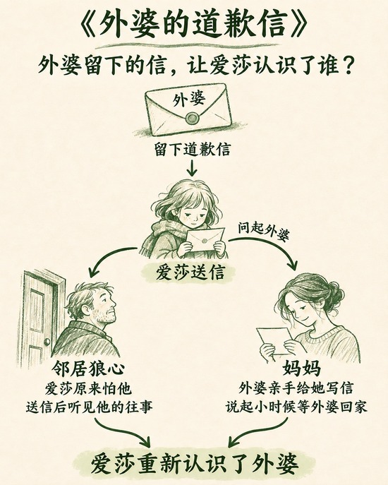

外婆去世后，她拿着一封信，去敲楼里最不敢敲的那扇门
阅读提示｜下文涉及《外婆的道歉信》的主要情节和部分结局。

WMelon会客厅 · 共读《外婆的道歉信》
爱莎站在邻居家门口，手里捏着一封信。信上那几行字，她只认得一个词：“密阿玛斯”。那是外婆讲的故事里的地方。她顺着信上的地址找来，才发现收信人就住在同一栋楼，正是她平时会绕着走的那个男人。
她在心里管他叫“怪物”。一个孩子为什么怕他，倒不难想象：他很少跟邻居来往，爱莎也几乎没和他说过话。现在，她按了门铃，又敲了门。里面没有人应。
还在学校上学的时候，爱莎被同学欺负过。她珍惜的格兰芬多围巾，被人扔进了马桶。外婆听见以后，那天半夜带她去看猴子。翻进动物园这一趟，后来还得去警察局解释。可现在，那个一向惹事、一向护着她的人，给她留下了一件得自己去做的事。
爱莎不知道，外婆欠这个男人一句什么话。她只记得外婆交代过，对方可能不愿意收，要亲口说是谁让她来的。光知道地址还不够，得等到人出现，再把信交给他。